FIRST VISIT
🌙 はじめて来た人へ
初見コメント、ROM、参加の雰囲気をまとめています。
- YUZUKOSYO SECRET BASE -
柚胡椒の秘密基地は、Twitchでのゲーム配信や活動情報をまとめたホームページです。
配信予定、プロフィール、YouTube、X、Discord、LINEスタンプ、アプリ販売へのリンクを、初めて来た人にも分かりやすくまとめています。
Twitchの配信状態を確認してるよ…
🎮 今日のゲーム：準備中
無言フォロー、ROM全然OK
ふらっと来て、のんびり見て、気軽にコメントしてってね～！
FIRST VISIT
初見コメント、ROM、参加の雰囲気をまとめています。


VISIT STAMP
この端末で1日1回、来場した日に自動で「済」マークが付きます。トップでは今月分を表示し、過去24ヶ月分は別ページで確認できます。
※来場スタンプはこのブラウザに保存されます。
別端末・別ブラウザでは別カウントです。
検索履歴やサイトデータを削除すると、来場スタンプと柚胡椒くじ履歴はリセットされます。削除前に復元リンクをコピーして、メモ・LINE・自分宛メールなどへ保存してください。戻す時は保存したリンクを開いてください。
過去24ヶ月分の出席表と、月ごとの画像保存はこちら。
配信予定を確認中…
予定が未登録の場合は、X・Discordでお知らせするよ。
配信予定を見る →1日に1回、短い格言が表示されます。押すと今日の格言の部屋に移動するよ。
今日の格言を準備中…
今日の格言の部屋を見る →
1日に1回、公開中の迷言からランダム表示されます。ここから迷言集の部屋と投稿フォームへ移動できるよ。
今日の迷言を準備中…
1端末につき1日1回、今日の運勢とひとことコメントが出ます。引いた後は明日まで押せないよ。

今日の柚胡椒くじを準備中…
今日の運勢
-
-
柚胡椒の配信スタイル、好きなゲーム、活動場所、秘密基地のことをまとめた部屋。
プロフィールを見る →サイトに出てくる幽霊ちゃんと、たぬちゃんの紹介部屋。
住人を見る →曜日ごとに変わる、秘密基地の色と雰囲気をまとめたページ。
テーマカラー表を見る →幽霊ちゃんとたぬちゃんの物語を置いていく場所です。第3話「幽霊、はじめてのクリック」は2026/06/30公開予定です。
ショートカットからはこの小説欄に移動します。小説ページでは、作品名と話数を押して本文を展開できます。
小説 秘密の話を見る →APP ROOM
柚胡椒が作っている便利アプリやWebツールの入口です。
PR・Amazonリンク・使用メモ
配信まわりで使っているものを、オリジナルのイメージ画像と使用メモでまとめています。
掲載画像は商品公式画像ではなく、カテゴリを表すオリジナル画像です。価格・在庫・仕様は変わることがあるため、最新情報はAmazonの商品ページで確認してください。
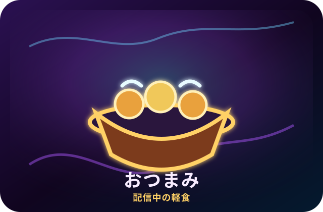
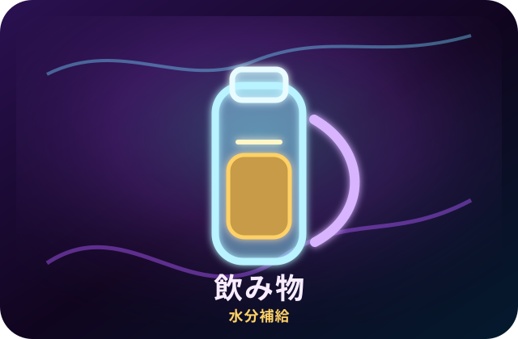
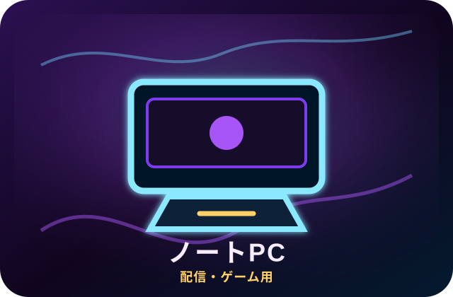
配信・ゲーム用PC
ゲーム、OBS、ブラウザ確認などをまとめて動かすためのメインPC枠。配信設定はゲームの重さに合わせて調整しています。
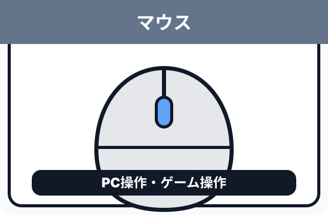
ゲーム操作・普段使い
ゲーム操作と普段のPC操作で使っているマウス。手の大きさや持ち方で合う・合わないが出やすいので、形状確認は必須です。
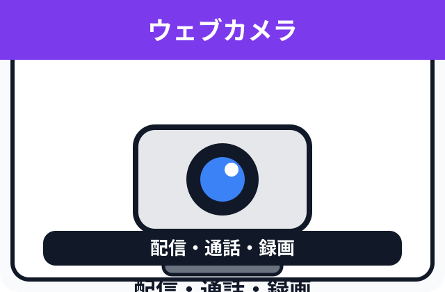
映像まわり
配信、通話、録画で使う映像まわりの機材。部屋の明るさや設置位置で映り方が変わるので、ライトとの相性も見ています。
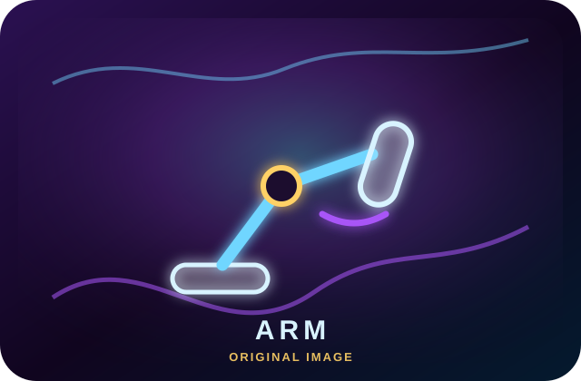
マイク位置調整
マイクの位置を調整しやすくするためのスタンド。机の形や厚みによって取り付け可否が変わるので、設置条件の確認が必要です。
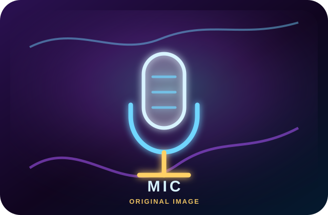
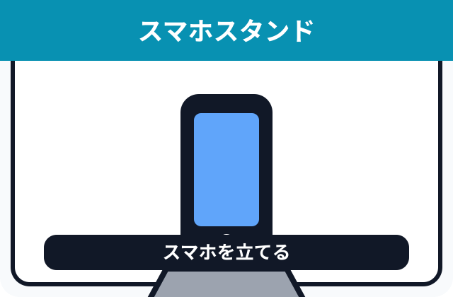
通話・通知確認
配信中の通知確認、通話、スマホ置き場として使用。画面を立てて置けると、配信中でも確認しやすくなります。
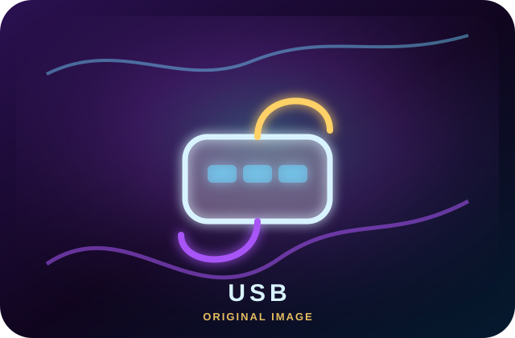
USBまわり
USB機器をまとめて接続するためのハブ。マイク、カメラ、キャプチャーなどを使う場合はポート数に余裕があると便利です。
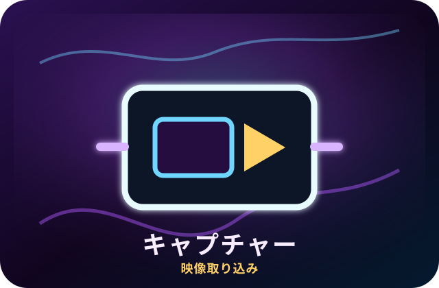
映像・録画
ゲーム機の映像をPCへ取り込むためのキャプチャー機材。解像度、フレームレート、遅延の相性は使用環境で確認しています。
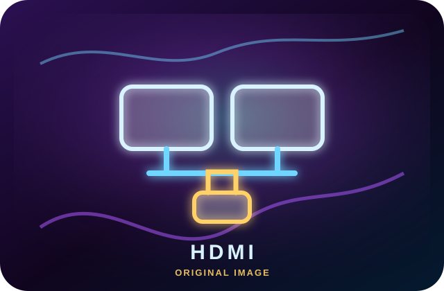
映像出力・拡張
モニター出力を増やすための拡張機材。PC側のType-C端子が映像出力に対応しているか確認してから選ぶ必要があります。
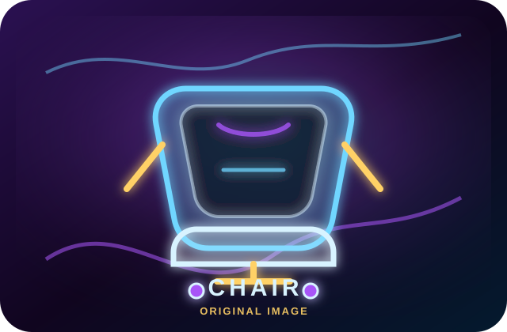
配信・作業用チェア
配信中や作業中に座るためのチェア。長時間使うものなので、サイズ・耐荷重・座面幅は商品ページで確認してください。
当サイトはAmazonアソシエイト・プログラムの参加者です。
Amazonのアソシエイトとして、柚胡椒は適格販売により収入を得ています。
掲載画像は商品公式画像ではなく、サイト用に作成したオリジナルのイメージ画像です。
UPDATE LOG
追加・修正内容を事実ベースで記録します。
SOCIAL LINKS
📱 各SNS
SNSに加えて、LINEスタンプとアプリ販売ページへの入り口です。